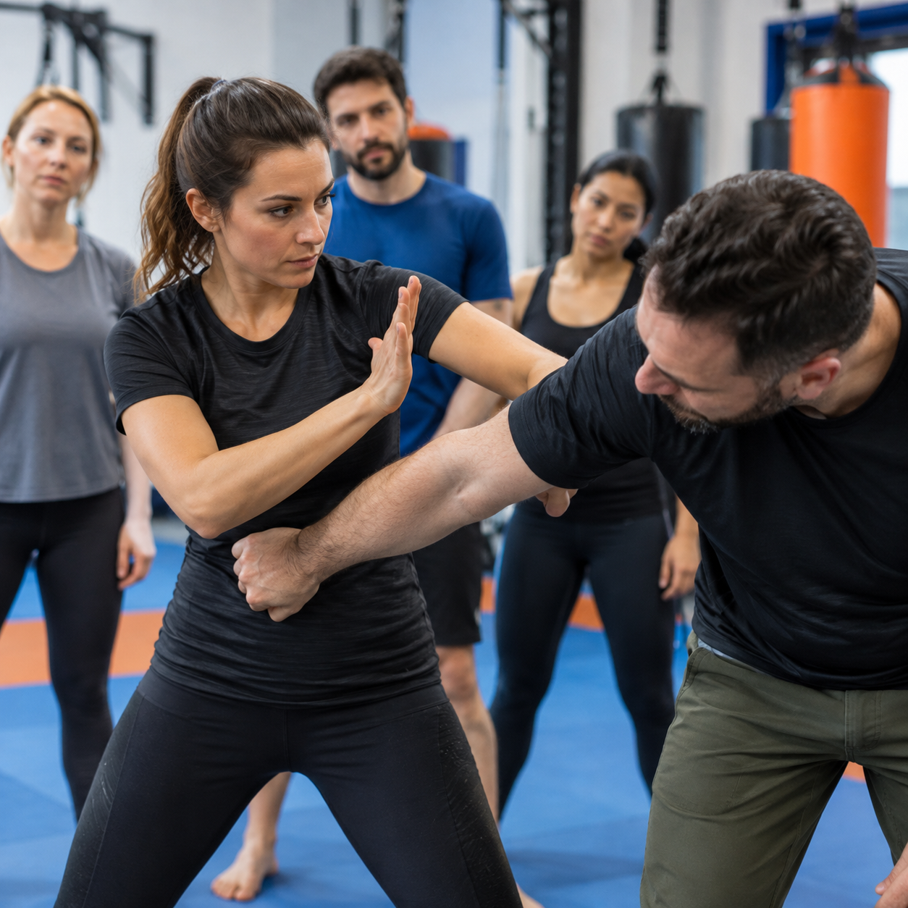
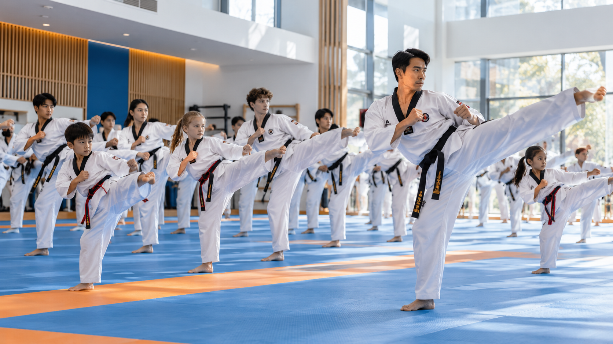
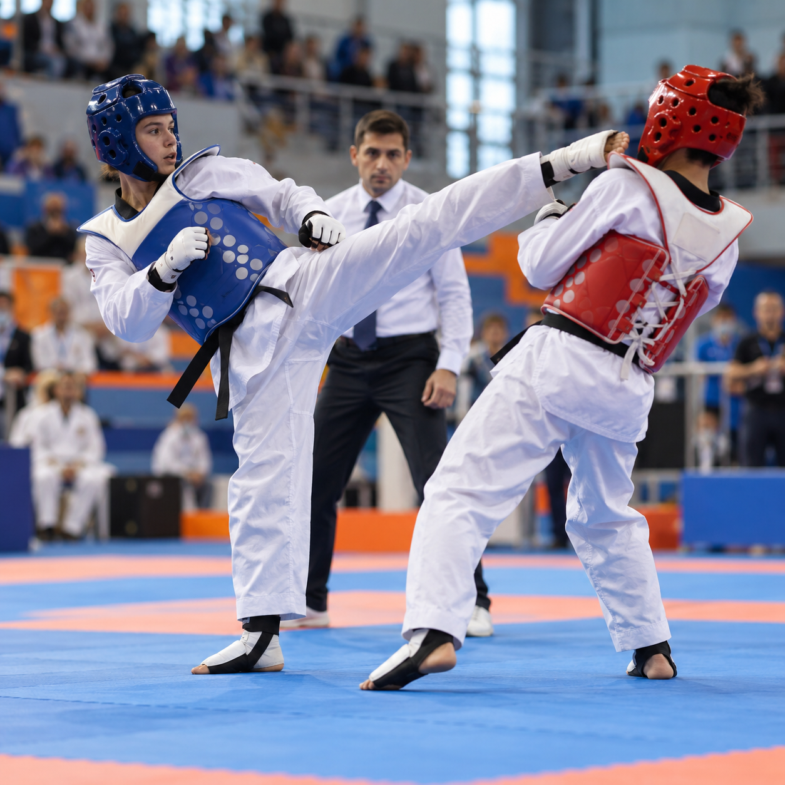
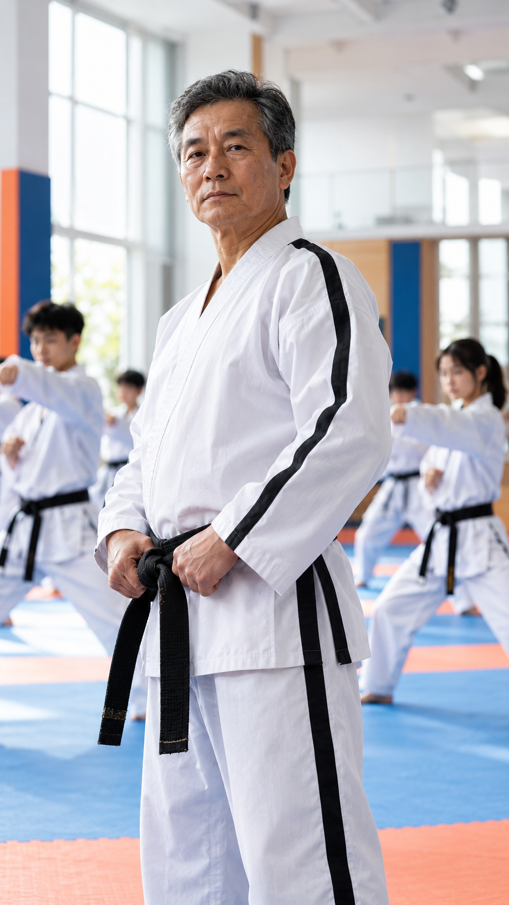
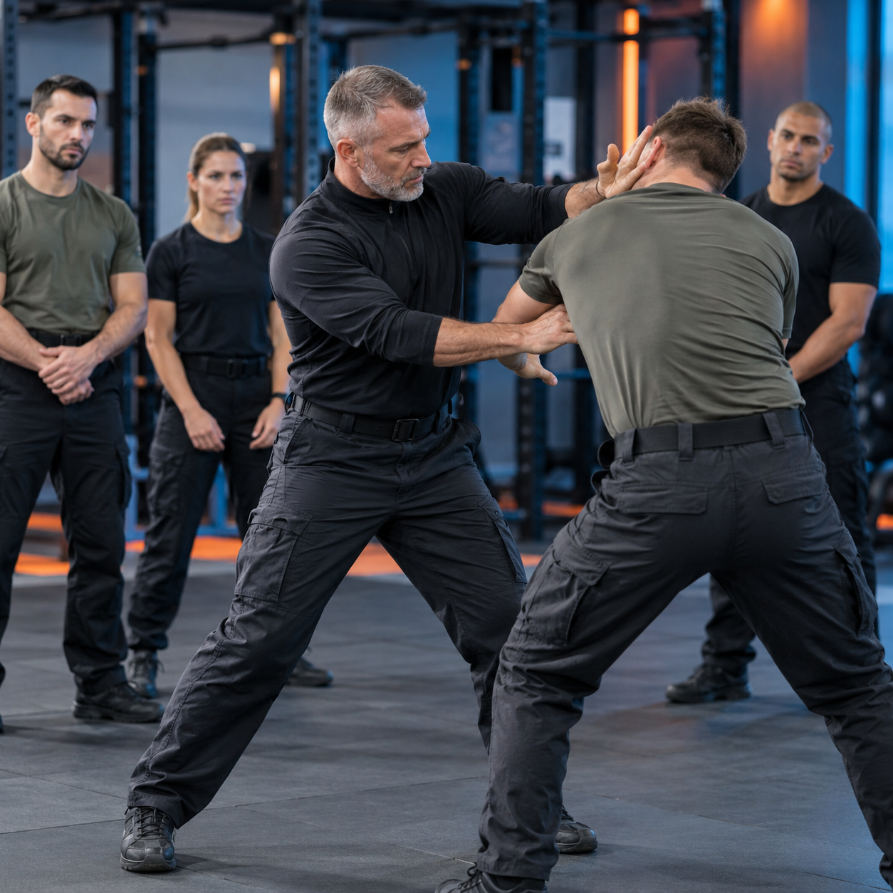

DEPARTAMENTO 01
Defensa personal
Formación orientada a los ámbitos civil, policial y militar. Cada consulta se aborda según el contexto y la necesidad de entrenamiento.
Consultar formaciónDISCIPLINA · FORMACIÓN · COMUNIDAD
Una organización que reúne la enseñanza marcial, la formación en defensa personal y el desarrollo de torneos.

LA ESCUELA
La práctica técnica es el punto de encuentro de la organización. Un espacio para conocer la disciplina y seguir desarrollándose dentro del Taekwon-Do.
LA ORGANIZACIÓN
La escuela integra distintas formas de aprender, enseñar y compartir el Taekwon-Do.

Formación orientada a los ámbitos civil, policial y militar. Cada consulta se aborda según el contexto y la necesidad de entrenamiento.
Consultar formación
Un espacio para la actividad de Taekwon-Do ULCAM y la organización de torneos ITF Choson dentro de la propuesta institucional.
Consultar actividadesDIRECCIÓN
IX DAN
La dirección está a cargo de un Grand Master 9.º Dan de Taekwon-Do Chang Hon. También es instructor de defensa personal civil, policial y militar, director de Taekwon-Do ULCAM y de torneos ITF Choson.
Entrar en contacto
Imagen ilustrativa de la demo
LA ESCUELA EN MOVIMIENTO
Este espacio puede reunir material audiovisual de prácticas y actividades. Los videos de la escuela se incorporarán cuando estén disponibles.
PREGUNTAS FRECUENTES
Escribinos por WhatsApp y contanos qué tipo de entrenamiento te interesa. La escuela te responderá con la información vigente.
La organización contempla formación en defensa personal civil, policial y militar. Consultá por programa y modalidad.
Sí. La sección audiovisual puede mostrar clases, formación y torneos cuando la escuela comparta el material oficial.
CONTACTO
Consultá por la escuela, la formación en defensa personal o las actividades de Taekwon-Do ULCAM y torneos ITF Choson.